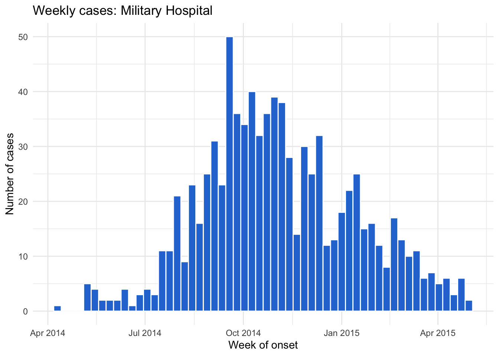
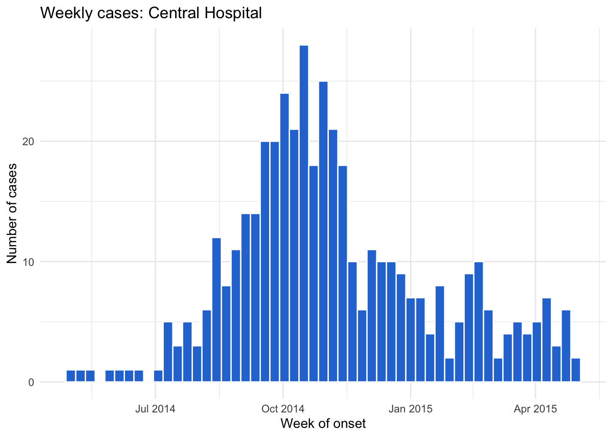

library(tidyverse)
library(here)
library(rio)
library(janitor)
linelist <- import(here("processed_data", "combined_linelist.rds"), trust = TRUE)Session 8: Programming — Functions, if/else, Loops, and Iteration
Writing functions, if/else and if_else(), for loops, and iteration with map() and walk()
NoteIn this session you will learn to
This session is optional / advanced: it builds on everything before it, especially vectors and subsetting (Session 4) and plotting (Sessions 6 and 7).
- Write your own functions with arguments and default values
- Write functions that work on data frames and return tables or plots
- Use
if/elsefor one value andif_else()for a whole column, and explain the difference - Repeat a task with a
forloop — for example, saving one epidemic curve per hospital - Do the same with
map()/walk()from purrr (part of the tidyverse)
Before you start: open the workshop folder in Positron (File → Open Folder…) and open student_scripts/Session 8 - Programming_STUDENT.R. This session starts from processed_data/combined_linelist.rds and processed_data/measles_final.rds, which you saved in Session 3. If you missed it, ready-made copies are already in processed_data/.
Today’s goal: “Your manager wants an epidemic curve for every hospital, every week.” By the end of the session, one loop does it.
Part 1: Set up
Part 2: Writing your first function
Why write functions?
If you copy and paste code more than twice, write a function. Functions:
- avoid copy-paste mistakes (change it once, fixed everywhere)
- give a task a clear name (
c_to_f()says what it does) - make your scripts shorter and easier to read
The shape of a function
c_to_f <- function(temp_c) {
temp_c * 9 / 5 + 32
}c_to_fis the name — you save a function with<-like any object. Run the whole block to create it; then it appears in the Variables panetemp_cis the argument — the input. Inside the function, it is whatever value you pass in- The code between
{ }is the body - The function returns the result of its last line
c_to_f(38)[1] 100.4c_to_f(c(36.8, 38.5, 40.1)) # it's vectorized, because the maths inside is[1] 98.24 101.30 104.18Because it’s vectorized, it works on a whole column inside mutate():
linelist %>%
mutate(temp_f = c_to_f(temp)) %>%
select(case_id, temp, temp_f) %>%
head(3) case_id temp temp_f
1 5fe599 36.8 98.24
2 8689b7 36.9 98.42
3 11f8ea 36.9 98.42Default values
Give an argument a default with =. You can change it, but you don’t have to:
c_to_f <- function(temp_c, digits = 1) {
round(temp_c * 9 / 5 + 32, digits)
}
c_to_f(38.37) # uses digits = 1[1] 101.1c_to_f(38.37, digits = 0) # overrides it[1] 101
WarningCommon mistakes
- Changing the function but not re-running the block: R still uses the old version.
Part 3: Functions that use data
A calculation used in many places
pct <- function(x, digits = 1) {
round(mean(x, na.rm = TRUE) * 100, digits)
}
linelist %>%
group_by(hospital_name) %>%
summarise(
n = n(),
pct_death = pct(outcome == "Death"),
pct_fever = pct(fever == "yes")
)# A tibble: 7 × 4
hospital_name n pct_death pct_fever
<chr> <int> <dbl> <dbl>
1 Central Hospital 454 42.5 77.3
2 HMO Health 280 44.3 92.9
3 Military Hospital 896 44.5 79
4 Other/Unknown 2354 42.7 77.3
5 Premiere Health 274 47.1 94.5
6 Regional Medical center 1771 44.6 76.7
7 St. Mark's Maternity Hospital 422 47.2 75.8Compare with Session 5, where we wrote round(mean(...) * 100, 1) every time.
A function that takes a data frame
hospital_summary <- function(data, hospital) {
data %>%
filter(hospital_name == hospital) %>%
summarise(
n = n(),
pct_death = pct(outcome == "Death")
)
}
hospital_summary(linelist, "Military Hospital") n pct_death
1 896 44.5hospital_summary(linelist, "Central Hospital") n pct_death
1 454 42.5hospital is an argument holding a value (the hospital’s name), so it can go straight into filter().
A function that makes a plot
make_epicurve <- function(data, hospital) {
data %>%
filter(hospital_name == hospital, onset_date >= as.Date("2014-01-01")) %>%
ggplot(aes(x = onset_date)) +
geom_histogram(binwidth = 7, fill = "#2a78d6", color = "white") +
labs(
title = paste("Weekly cases:", hospital),
x = "Week of onset",
y = "Number of cases"
) +
theme_minimal()
}
make_epicurve(linelist, "Military Hospital")
paste("Weekly cases:", hospital) builds the title from the argument, so every plot gets the right title.
WarningCommon mistake: name the argument
district_name, not district
Don’t give an argument the same name as a column! In
function(data, district) { data %>% filter(district == district) }R compares the district column with itself, so every row is kept — no error, just the wrong answer. Name the argument district_name instead: filter(district == district_name).
Part 4: if / else
if runs code only when a condition is TRUE. else runs when it’s FALSE:
fever_status <- function(temp) {
if (temp >= 38) {
"fever"
} else {
"no fever"
}
}
fever_status(39.2)[1] "fever"fever_status(36.9)[1] "no fever"if works on ONE value
fever_status(c(39.2, 36.9))Error in `if (temp >= 38) ...`:
! the condition has length > 1if asks one yes/no question. For a whole column, use the vectorized if_else() from Session 2:
fever_status <- function(temp) {
if_else(temp >= 38, "fever", "no fever")
}
fever_status(c(39.2, 36.9))[1] "fever" "no fever"linelist %>%
mutate(fever_measured = fever_status(temp)) %>%
count(fever_measured) fever_measured n
1 fever 4976
2 no fever 1324
3 <NA> 151Where if shines: checking inputs
if is perfect for questions with one answer, like “is the input a number?”. stop() ends the function with a helpful error message:
c_to_f <- function(temp_c, digits = 1) {
if (!is.numeric(temp_c)) {
stop("temp_c must be a number, not ", class(temp_c))
}
round(temp_c * 9 / 5 + 32, digits)
}
c_to_f("38")Error in `c_to_f()`:
! temp_c must be a number, not characterPart 5: for loops
A for loop runs the same code once for each value in a vector:
for (h in c("Central Hospital", "Military Hospital")) {
print(h)
}[1] "Central Hospital"
[1] "Military Hospital"Read it as: “for each h in this vector, run the code between { }”. h takes each value in turn.
Loop over every hospital
hospitals <- linelist %>%
filter(hospital_name != "Other/Unknown") %>%
distinct(hospital_name) %>%
pull(hospital_name) %>%
sort()
hospitals[1] "Central Hospital" "HMO Health"
[3] "Military Hospital" "Premiere Health"
[5] "Regional Medical center" "St. Mark's Maternity Hospital"for (h in hospitals) {
n_cases <- sum(linelist$hospital_name == h)
print(paste(h, "has", n_cases, "cases"))
}[1] "Central Hospital has 454 cases"
[1] "HMO Health has 280 cases"
[1] "Military Hospital has 896 cases"
[1] "Premiere Health has 274 cases"
[1] "Regional Medical center has 1771 cases"
[1] "St. Mark's Maternity Hospital has 422 cases"Inside a loop, results are not printed automatically — use print().
Save the results
To keep results, create an empty container before the loop and fill it inside:
case_counts <- c() # an empty vector
for (h in hospitals) {
case_counts[h] <- sum(linelist$hospital_name == h)
}
case_counts Central Hospital HMO Health
454 280
Military Hospital Premiere Health
896 274
Regional Medical center St. Mark's Maternity Hospital
1771 422 The payoff: one epidemic curve per hospital
for (h in hospitals) {
p <- make_epicurve(linelist, h)
file_name <- paste0("epicurve_", make_clean_names(h), ".png")
ggsave(here("outputs", file_name), plot = p, width = 8, height = 5, dpi = 300)
}make_clean_names()(janitor) turns “St. Mark’s Maternity Hospital” intost_marks_maternity_hospital— safe for a file namepaste0()glues the pieces with no spaces intoepicurve_st_marks_maternity_hospital.png- Six files, one loop. Next week, re-run it with the new data — check the Explorer to see the new files in
outputs/
NoteYou’ve already been looping
mutate(), summarise() with group_by(), and across() all repeat work for you. In R, reach for those first; write a loop when you need to repeat a whole task, like making and saving a plot.
Part 6: Iteration the tidyverse way: map() and walk()
The purrr package (part of the tidyverse) does what loops do, in one line:
map(x, f)— runfon each element ofxand return a list of resultsmap_dbl()— the same, but return a number vectorwalk(x, f)— runfon each element for its side effect (like saving a file), return nothing
# The mean of three columns
linelist %>%
select(age_years, bmi, temp) %>%
map_dbl(~ mean(.x, na.rm = TRUE))age_years bmi temp
16.05732 30.59385 38.58784 A data frame is a list of columns, so map_dbl() runs once per column. ~ mean(.x, na.rm = TRUE) is a short function: .x is the current element — the same ~ .x you used with across() in Session 3.
# A list of six plots
epicurves <- map(hospitals, ~ make_epicurve(linelist, .x))
length(epicurves)[1] 6epicurves[[1]]
# Save them all: the same as the for loop in Part 5, in one call
walk(hospitals, ~ ggsave(
here("outputs", paste0("epicurve_", make_clean_names(.x), ".png")),
plot = make_epicurve(linelist, .x), width = 8, height = 5, dpi = 300
))
NoteLoop or
map()?
Both are fine! Loops are easier to read when you’re starting out; map() is shorter and is what you’ll see in modern R code. Choose the one you can read.
Note🔁 The base R way:
lapply() and sapply()
Base R’s apply family does the same job, and you will see it everywhere in older code, help pages, and bioinformatics packages (Bioconductor):
| purrr | base R | returns |
|---|---|---|
map(x, f) |
lapply(x, f) |
a list |
map_dbl(x, f) |
sapply(x, f) (or vapply(x, f, numeric(1))) |
a vector, usually |
three_cols <- linelist[, c("age_years", "bmi", "temp")]
sapply(three_cols, mean, na.rm = TRUE) # like map_dbl()age_years bmi temp
16.05732 30.59385 38.58784 lapply(three_cols, range, na.rm = TRUE) # like map(): a list$age_years
[1] 0 84
$bmi
[1] 10.9 60.0
$temp
[1] 35.2 40.8sapply(three_cols, range, na.rm = TRUE) # surprise: a matrix! age_years bmi temp
[1,] 0 10.9 35.2
[2,] 84 60.0 40.8Extra arguments (na.rm = TRUE) go after the function name. sapply() guesses the shape of the result: a vector, a matrix, or a list. That guessing is why purrr has map_dbl(), map_chr(), and friends, which always return the type their name says. For your own functions, the base R shorthand is \(x) mean(x, na.rm = TRUE), the same idea as ~ mean(.x, na.rm = TRUE).
Tip⭐ Bonus
- Add a
fillargument tomake_epicurve(), with a default of"#2a78d6", so you can choose the bar color. - Add an input check to
rate_per_10k():stop()if population is 0 or missing. - Write a function that makes the whole measles Table 1 from Session 5, and run it for each district with
map(). - Brought your own data? Find a piece of code you copied and pasted, and turn it into a function.
See the solutions file for answers.
Key points
- Write it once, run it many times: if you copy and paste code more than twice, write a function with
function(). - A function takes arguments (which can have default values) and returns the result of its last line. Re-run the block after every change.
- Never give an argument the same name as a column — use
district_name, notdistrict. if/elseworks on one value (great for input checks withstop());if_else()works on a whole column.- A
forloop repeats a whole task for each value; create an empty container before the loop to keep results. map()returns a list,map_dbl()a number vector, andwalk()just does something (like saving files) for each element. In base R code you will seelapply()(always a list) andsapply()(it guesses the shape).
Where to go next: R for Data Science (free online) — chapters on functions and iteration; The Epidemiologist R Handbook — applied examples for public health.